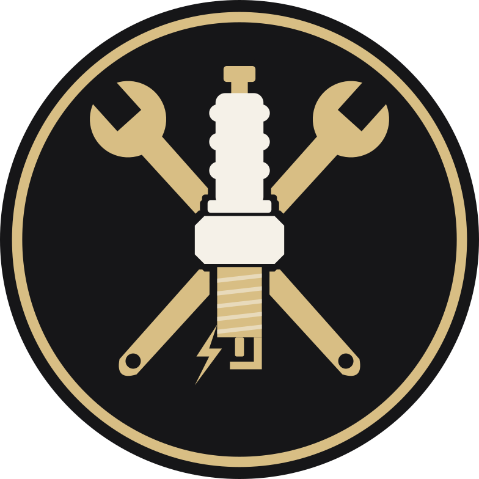

Márkafüggetlen autószerviz · Dunaújváros · 2008 óta
Precíz autójavítás. Megbízható kezekben.
Márkafüggetlen autószerviz Dunaújvárosban. Teljes körű diagnosztika, dízelrendszer-javítás és korszerű 3D futóműállítás személy- és kishaszongépjárművek számára.
- Alapítva2008 óta Dunaújvárosban
- JavításMárkafüggetlenül
- JárművekSzemély- és kishaszonjárművek
- Technológia3D futóműállítás
01Szolgáltatások
Amivel bejöhet hozzánk
Rendszeres karbantartástól a nehezen behatárolható hibákig. Három dologra különösen felkészültünk: a dízelrendszerekre, a pontos futóműállításra és a hibakeresésre.
Dízelrendszer, adagoló és porlasztó javítása
Nehezen indul, füstöl, rángat vagy elment az ereje? Dízelmotornál ezek mögött gyakran az üzemanyag-ellátás áll – ezt mérjük be és javítjuk.
3D futóműállítás
Ha húz az autó, ferde a kormány, vagy egyenetlenül kopik a gumi: kamerás mérőrendszerrel mérjük, és gyári értékre állítjuk.
Hogyan működik C · KIEMELTDiagnosztika és teljes körű szerviz
Hibakód-olvasás, mérés, olajcsere, fék, vezérlés – márkától függetlenül, személyautóhoz és kishaszonjárműhöz.
Minden szolgáltatásIdőszakos szerviz és javítás egy helyen, márkától függetlenül. Telefonon egyeztetünk időpontot, és megbeszéljük, mire van szükség.
- Időszakos karbantartás
- Személyautók és kishaszonjárművek
- Javítás márkától függetlenül
A hibakód csak kiindulópont. A diagnosztika célja, hogy kiderüljön, mi okozza a tünetet – és ne cseréljünk feleslegesen alkatrészt.
- Világító motorhiba- vagy más figyelmeztető lámpa
- Teljesítményvesztés, akadozás
- Megnövekedett fogyasztás
A dízelmotor érzékeny az üzemanyag-ellátás hibáira. A tünetekből és a mérésekből indulunk ki, és a hibás részt javítjuk.
- Nehéz indulás hidegben vagy melegen
- Füstölés, teljesítményvesztés
- Egyenetlen alapjárat
Az adagoló és a porlasztók határozzák meg, mennyi üzemanyag jut a hengerekbe, és milyen formában. Ha ez nem pontos, a motor erőtlen, füstöl, többet fogyaszt.
- Adagolójavítás
- Porlasztójavítás
- Kopogó, „kalapáló” járás kivizsgálása
A kerekekre mérőtáblák kerülnek, a kamerák ezek helyzetéből számolják a kerékállást. Az eredmény alapján állítjuk be a futóművet.
- Húz az autó, ferde a kormány
- Egyoldalú gumikopás
- Futóműalkatrész-csere után
Ha az autó nehezen pörög fel indításkor, vagy töltésjelző világít, az önindító vagy a generátor lehet a gyanús. Műszaki vizsga előtt átnézzük az autót, hogy a vizsgán ne érje meglepetés. (Vizsgáztatást nem végzünk.)
- Önindító-javítás
- Generátorjavítás
- Felkészítés a műszaki vizsgára
A szívóoldalon és az EGR-szelepben idővel koksz rakódik le, ami rontja a motor légellátását. A dióőrlemény kíméletes szemcseszórással távolítja el a lerakódást. Részletek a dízel szakaszban.
- Erőtlenség, rángatás
- Egyenetlen járás, füstölés
- EGR-hibakód
Ford gépjárművek garanciális időn belüli általános szervizelését gyári Ford alkatrészekkel végezzük, online szervizkönyv-vezetéssel.
- Gyári Ford alkatrészek
- Online szervizkönyv-vezetés
- Garanciális időn belül
02Dízelszerviz
Dízelrendszer-javítás, célzott hibafeltárással
Adagolók, porlasztók és a dízel üzemanyag-rendszer javítása. Egy dízelmotor hibája sokféle tünetet okozhat – ezért a javítás a hiba pontos behatárolásával kezdődik, nem alkatrészcserével.
- 01Nehéz indulás
- 02Füstölés gyorsításkor
- 03Teljesítményvesztés
- 04Egyenetlen alapjárat
- 05Megnövekedett fogyasztás
- 06Kopogó, kemény járás
Telefonon vagy személyesen elmondja, mit tapasztal, és mikor jelentkezik.
Diagnosztikával és méréssel kiderítjük, melyik rész okozza a hibát.
Az adagoló, a porlasztók vagy az üzemanyag-rendszer hibás részének javítása.
02·BÚj szolgáltatás
Szívósor- és EGR-tisztítás dióőrleménnyel
A kipufogógáz-visszavezetés (EGR) miatt a szívóoldalon és magában az EGR-szelepben idővel koksz rakódik le. Ez szűkíti a motor levegőútját: a motor erőtlenebb lesz, rángathat, egyenetlenül járhat vagy füstölhet.
A tisztításhoz finom dióhéj-őrleményt használunk: a szemcseszórás kíméletesen távolítja el a lerakódott kokszot.
033D futóműállítás
Precíz futóműállítás 3D technológiával
A kerekek állása határozza meg, hogyan tartja az irányt az autó, mennyire stabil fékezéskor és kanyarban, és hogyan kopnak a gumik. Már néhány tized fok eltérés is érezhető – a pénztárcán is.
A kerekek szöge felülről nézve. Ha eltér, az autó húz, a gumi a szélén „radírozódik”, nő a fogyasztás.
A kerék dőlése elölről nézve. Rossz értéknél a gumi egyik oldala kopik gyorsabban.
A kormánytengely dőlése oldalról nézve. Ez segíti, hogy a kormány kanyar után magától visszaálljon.
Mikor érdemes beállíttatni?
- Húz az autó jobbra vagy balra
- Egyenesben ferde a kormány
- Egyoldalú gumikopás
- Kátyú, padka után
- Futóműalkatrész-csere után
- Új gumik felszerelésekor
Szemléltető értékek, nem valós mérés. A megengedett tartományt az autó gyári adatai határozzák meg.
04Miért minket?
Amire nálunk számíthat
Nem ígérünk csodát. Amit tudunk: egy helyi, 2008 óta működő műhely, ahol egyenesen beszélünk az autóról.
Bármilyen márka
Márkafüggetlen szerviz: nem kell a márkakereskedésbe vinni az autót a karbantartáshoz és a javításhoz.
Kishaszonjármű is
Személyautók mellett kishaszongépjárművek karbantartását és javítását is vállaljuk.
Személyes egyeztetés
Telefonon vagy személyesen egyeztetünk. A céget Király István ügyvezető vezeti.
Egy hívással
Időpontért, kérdésért elég felhívni: +36 20 585 3234, hétköznap 8–12 és 13–17 között.
Ford garanciális szervizelés
Ford gépjárművek garanciális időn belüli általános szervizelése gyári Ford alkatrészekkel, online szervizkönyv-vezetéssel.

2008 FotóhelyIde a műhely, a szerelőállás vagy a 3D futóműállító valódi fotója kerül – az ügyféltől.05Rólunk
Dunaújvárosi műhely, 2008 óta
A KIRÁLY Autószerviz 2008-ban alakult Dunaújvárosban. Márkafüggetlen szervizként személyautók és kishaszonjárművek karbantartásával és javításával foglalkozunk – a napi szerviztől a dízelrendszer javításán át a 3D futóműállításig.
Kérdéssel, időpontért közvetlenül a szervizt hívja – nincs ügyfélszolgálat vagy online foglaló, egyszerűen megbeszéljük, mikor hozza az autót.
06Értékelések
Amit az ügyfelek mondanak
Forrás: Turul Auto adatlap (2026. november). A Google-adatlapon szereplő értékelések külön linken érhetők el.
Turul Auto szervizrangsor – minősítések Felhasználás egyeztetendő
Kitalált véleményeket nem teszünk ki. A valódi Google-értékelések egy kattintással megnyithatók.
Google-értékelések megnyitása07Elérhetőség
Hívjon, és egyeztetünk időpontot
Időpontot telefonon egyeztetünk, hétköznap 8–12 és 13–17 között. Személyesen is bejöhet a műhelybe.
Nyitvatartás H–P
| Hétfő | 8–12 · 13–17 |
| Kedd | 8–12 · 13–17 |
| Szerda | 8–12 · 13–17 |
| Csütörtök | 8–12 · 13–17 |
| Péntek | 8–12 · 13–17 |
| Szombat | zárva |
| Vasárnap | zárva |
12 és 13 óra között ebédszünet. Ünnepnapokon eltérhet.